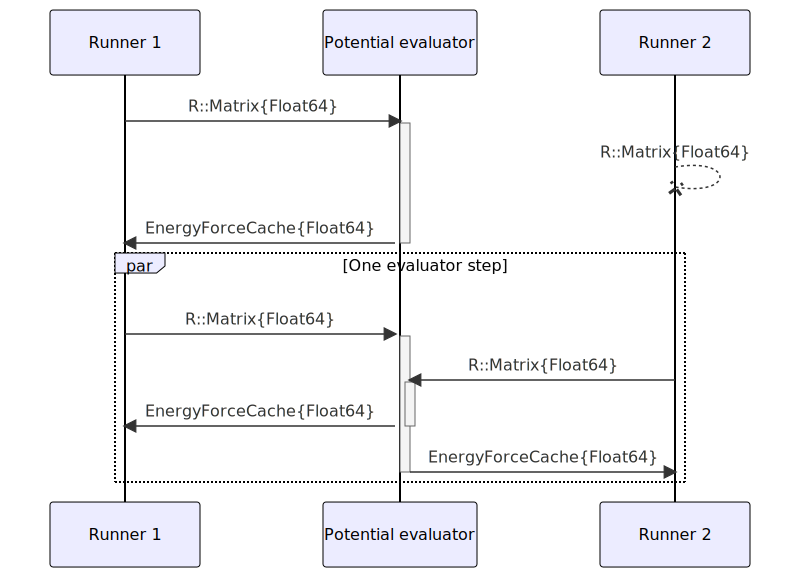

Improving MD simulation throughput by GPU batch evaluation.
Since each point in a trajectory requires a model evaluation / inference step on the previous point, we want fast evaluation of our MACE model to allow us to simulate more / longer trajectories.
While MACE model inference is much faster on a GPU, copying the input structure and output tensors from CPU -> GPU -> CPU (host-device copy) is somewhat inefficient and can introduce a bottleneck.
This is something the developers of MACE also realise, hence why MACE allows for batch evaluation of structures, where model input data is prepared for multiple structures at once, then concatenated into a larger array before transfer to a GPU. GPU memory can easily deal with large arrays and it appears that a single copy + sync operation of an array concatenated from multiple structures is significantly faster than N separate copy + synchronise operations, each containing data for a single structure.
To eliminate some of the bottleneck associated with host-device copies, the batch processing capability of MACE can be used to accelerate MD trajectories in a multiprocess setting by passing all model evaluation / inference steps to a single instance of the MACE model, as shown below.
In this tutorial, I show a method of speeding up MD simulations using a MACE potential energy surface and ACE friction model by batch evaluating the MACE potential on GPU.
Requirements
This workflow should work with any MACE potential, either on CPUs or GPUs, using my MACEModels.jl package.
Example script
In this example, we are running a MACE model on a single process (1 CPU + GPU) to batch evaluate for 31 runner processes. The performance implications of this will be discussed later.
We begin by loading the minimum necessary modules and launching additional processes.
using Distributed
using PythonCall
addprocs(
33; # One process for MACE inference, the rest of them run NQCDynamics
1 env = ["JULIA_PYTHONCALL_EXE" => PythonCall.python_executable_path()]
) - 1
- By default, PythonCall.jl resolves the loaded Conda environment when every process launches. Since process 1 has already ensured Python is available and works, we can skip the check on subsequent workers.
1@everywhere begin
using CUDA
using PythonCall
using NQCModels, NQCBase, NQCDynamics, MACEModels, Unitful, UnitfulAtomic, FrictionProviders
using DiffEqBase
import SciMLBase
using CSV, DataFrames, BSplineKit
import JuLIP, ACE1
end
@everywhere begin
2 function load_mace_model()
ase_io = pyimport("ase.io")
starting_structure = ase_io.read("Cu111_T-300K_3x3x6_lowH_relax.in")
nqcd_atoms, nqcd_positions, nqcd_cell = convert_from_ase_atoms(starting_structure)
model = MACEModel(
nqcd_atoms,
nqcd_cell,
["wojciech-best-mace-model.model"];
device = "cuda:1",
default_dtype = Float32,
batch_size = 32,
)
println("MACE model loaded on worker:", myid())
return model
end
end- 1
- We now load additional modules needed for our simulation. This needs to be done on all running processes to ensure everything needed for the simulation can be recreated on each process.
- 2
- This function is able to load the MACE model with the correct input parameters independent of the process calling it. Ideally, we want to call it as few times as possible and only within the scope of functions running on the evaluator processes to avoid unnecessary copying of data between processes.
# model_ref = @spawnat 3 load_mace_model()
remote_mace_model = remotecall_fetch(() -> load_mace_model(), 2)
@everywhere begin
# Starting structure data needs to be available for worker configuration
ase_io = pyimport("ase.io")
starting_structure = ase_io.read("Cu111_T-300K_3x3x6_lowH_relax.in")
nqcd_atoms, nqcd_positions, nqcd_cell = convert_from_ase_atoms(starting_structure)
endMultiprocess configuration
1const mpi_config = Ensemble.MultiProcessConfig(
collect(3:33), # Vector of "runner" worker IDs
[2], # Vector of "evaluator" worker IDs
load_mace_model, # Model loading function
nqcd_positions # Example of atomic positions to determine system size.
)
2const ensemble_settings = Ensemble.CustomSplitDistributed(
mpi_config, # MultiProcessConfig
Dict(:retry_delays => [1,1]) # Arguments to the pmap() function used to parallelise evaluation.
) - 1
-
MACEModels.Ensembleprovides aMultiProcessConfigobject which contains information about the desired splitting of work over processes. - 2
-
The
Ensemble.CustomSplitDistributedis a SciML Ensemble Algorithm, which is used inDifferentialEquations.jlto tell thesolvecommand how to parallelise solving an ODE problem. NQCDynamics makes use of this under the hood, so it can be passed as a keyword argument.
In this code cell, we split all available worker processes into two types:
Runners, which propagate an MD trajectory except for the evaluation of forces and energies.
Evaluators, which evaluate the MACE model for all structures that were passed to them by the runners.

CustomSplitDistributed allows for inclusion of additional keyword arguments to the pmap() function used internally to enable retrying of failed trajectories, or custom error handling.
Setting up dynamics
function EFT_LDFA_ACE(ase_structure, parameters)
1 ...
end
eft_model = EFT_LDFA_ACE(starting_structure, Dict(
"starting_structure" => "Cu111_T-300K_3x3x6_lowH_relax.in",
"eft_model_path" => "h2cu_ace.json",
"friction_atoms" => [55,56]
))
# PES model
2model = Ensemble.RemoteModel(mpi_config, nqcd_positions)
# Combined model
new_model = CompositeFrictionModel(model, eft_model)- 1
- I’m keeping this private for now. @ maurergroup ask Wojciech.
- 2
-
The
RemoteModelreads the multiprocessing configuration and implements its own custom methods forNQCModels.potentialandNQCModels.derivative!, which send the necessary data from Runner → Evaluator, wait for evaluation to finish and copy the results from Evaluator → Runner.
# Load 2TM progression for T_el only
function T_function_from_file(file::String, index::Int=2)
TTM_file = CSV.read(file, DataFrame)
T_spline = interpolate(TTM_file.Time, TTM_file[:, index], BSplineOrder(4)) # is a cubic spline
T_extrapolation = extrapolate(T_spline, Smooth()) #! Don't use to go earlier than the first point!
T_function(time_ps) = T_extrapolation(ustrip(u"ps", time_ps)) * u"K"
return T_function
end
ttm_function = T_function_from_file("2TM1D-toponly-100K.csv")
sim = Simulation{MDEF}(nqcd_atoms, new_model, cell = nqcd_cell, temperature = ttm_function)
initial_conditions = DynamicsVariables(sim, zeros(size(nqcd_positions)), nqcd_positions)
1Ensemble.start(mpi_config)
2kick = run_dynamics(
sim,
(0.0, 0.1u"fs"),
initial_conditions,
dt = 0.1u"fs",
trajectories = 31,
output = (OutputDynamicsVariables),
ensemble_algorithm = ensemble_settings,
)
3results = run_dynamics(
sim,
(0.0, 10u"fs"),
initial_conditions,
dt = 0.1u"fs",
trajectories = 48,
output = (OutputDynamicsVariables, OutputPotentialEnergy),
ensemble_algorithm = ensemble_settings,
)- 1
-
Ensemble.startinitiates model loading on the evaluator workers and makes them wait for structures to evaluate once loaded. - 2
-
Calling
run_dynamicsfor a single time step seems to take maximum advantage of precompilation. - 3
-
The final
run_dynamicscommand contains the instructions for our desired simulation. Note thatensemble_algorithmneeds to be set to theCustomSplitDistributedinstance we generated earlier.
Performance considerations

Example
- 1 Julia SLURM task per node
- 3 Potential evaluators
- Each on their own GPU
- 123 Trajectory runners
- 41 runners per GPU process
- 3 Potential evaluators
From worker 4: MACE inference step on worker 4 with 41 structures: 0.076100 seconds (24.78 k allocations: 789.703 KiB)
From worker 87: 0.090103 seconds (46 allocations: 2.391 KiB)
...
From worker 2: MACE inference step on worker 2 with 41 structures: 0.087901 seconds (24.78 k allocations: 791.828 KiB)
From worker 5: 0.102934 seconds (45 allocations: 2.375 KiB)
...
From worker 3: MACE inference step on worker 3 with 41 structures: 0.074337 seconds (24.78 k allocations: 789.703 KiB)
From worker 46: 0.092226 seconds (46 allocations: 2.391 KiB)Impressions so far: - MPI comms overhead adds about 20 ms per model evaluation step